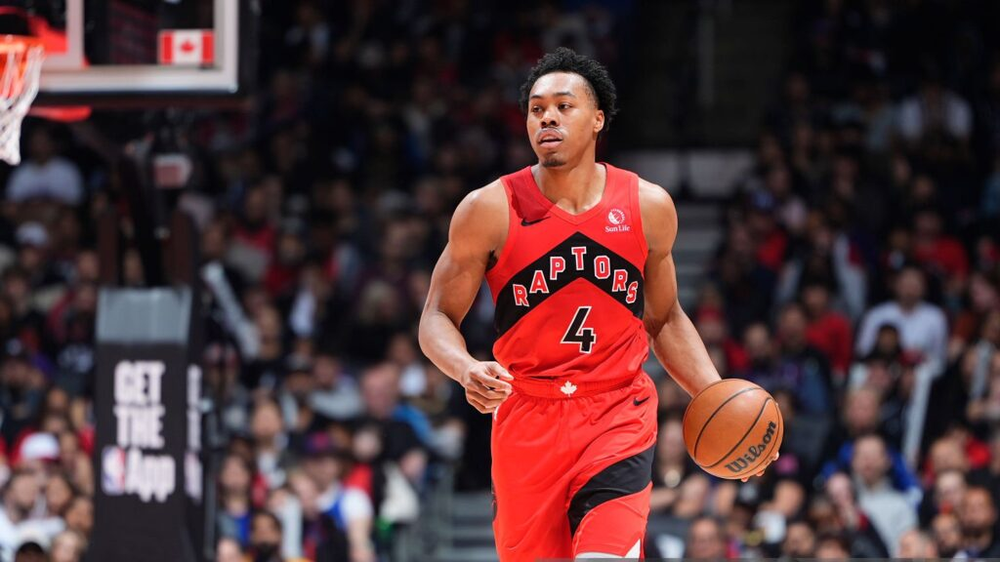

CRAVADAÇA! Scottie Barnes dá belo giro e enterra com tudo na defesa dos Cavs; VEJA
Scottie Barnes lifts Raptors in OT with 25 and 14 against Cavaliers

The Eastern Conference first round delivered a tense finish in Toronto. The Raptors topped the Cleveland Cavaliers 112-110 after overtime at Scotiabank Arena, and Scottie Barnes was in the middle of it all. The forward stacked 25 points and 14 assists, plus 7 rebounds, 3 steals and 3 blocks, earning a 9.3 Sofascore Rating for a complete playoff performance.
Playmaking sets the tone
Barnes set the table early. He opened with 8 points and 5 assists in the first quarter, keeping the Raptors offense humming in a 32-32 frame. He repeated the trick in the second, adding another 6 points and 5 assists as Toronto built a cushion with a 29-19 quarter.
Efficient scoring and shot profile
Barnes shot 11 of 21 from the field, all from two-point range, while going 0 of 2 from deep and 3 of 4 at the line. That translated to a 52% field goal mark, a 52.38% effective field goal percentage and a 54.92% true shooting percentage. He picked his spots well, including a perfect 2 of 2 stretch in the third quarter. His work inside powered Toronto in key moments. Even when the fourth quarter tightened, he kept finding buckets around the rim and drew contact to squeeze out points.
Two-way punch when it mattered
The defensive line reads like a playoff wish list: 3 steals and 3 blocks. Barnes registered 2 blocks in the second quarter and added another in the fourth, disrupting Cleveland’s rhythm at the rim. He also came up with a steal in each of the second, fourth and overtime periods. Fourth-quarter turbulence showed up in the plus-minus, but Barnes steadied in overtime. He chipped in 2 points, 2 defensive rebounds, 1 assist and 1 steal across the extra five minutes, finishing with a +2 on the night.